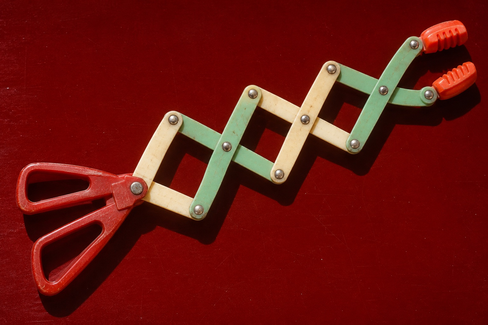
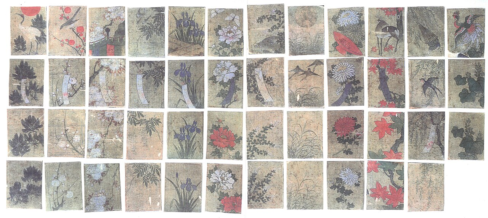
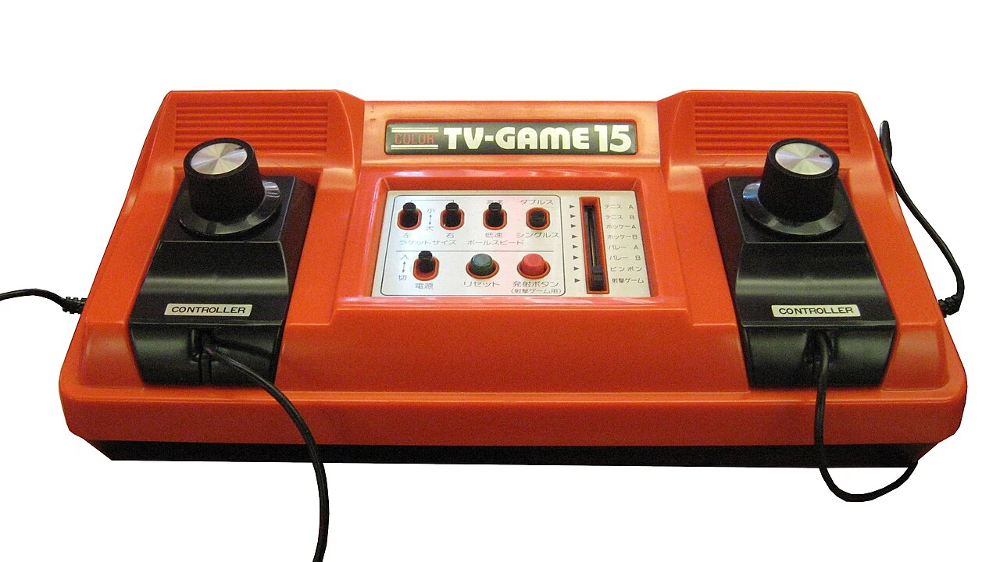
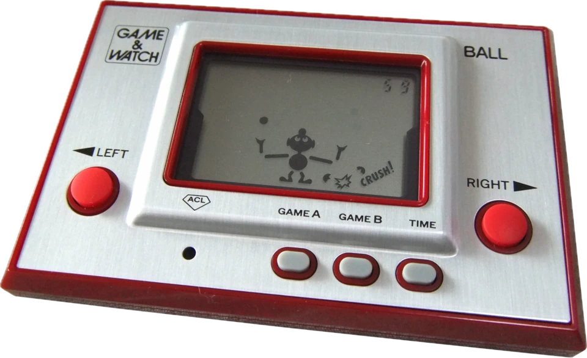
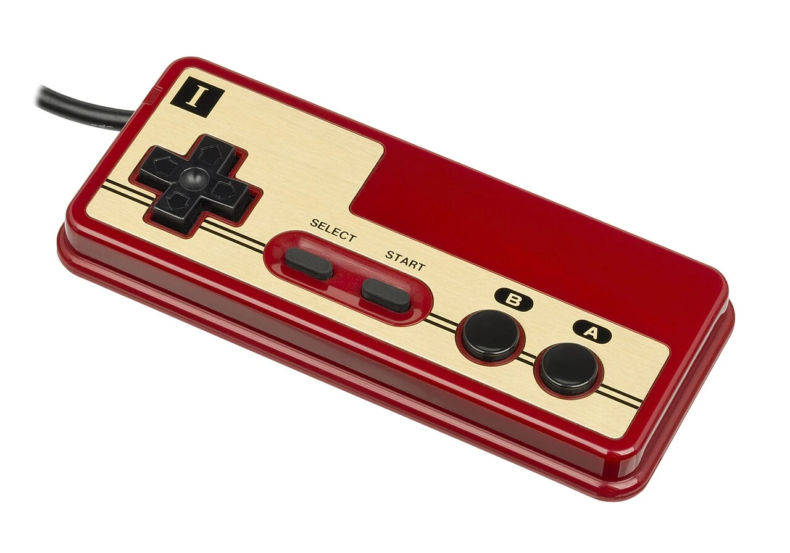

닌텐도가 만들어 온 놀이



마리오를 만든 닌텐도는 1889년 교토에서 화투를 만들어 팔기 시작했다.
화투패 한 벌에 열두 달이 들어 있습니다
1889년, 교토 시모교에서 야마우치 후사지로가 만들어 팔기 시작한 건 하나후다라는 일본식 화투였습니다. 한 벌에는 48장이 들어 있어요. 1월부터 12월까지 네 장씩, 각 달을 나타내는 식물 그림이 있습니다. 1월은 소나무, 2월은 매화, 3월은 벚꽃이에요.
.jpg){kind=link}
같은 화투로도 여러 놀이를 할 수 있습니다. 두 사람이 하는 코이코이에서는 가져온 패로 조합을 만들어요. 벚꽃이 그려진 패와 술잔이 그려진 패를 모으면 ‘꽃구경 술 한잔’에 해당하는 조합이 됩니다. 멧돼지와 사슴, 나비를 모아도 점수가 나고요. 카드의 그림이 놀이 안에서 저마다 할 일이 있었던 거죠.
조합을 만든 사람은 그 자리에서 판을 끝내거나, 점수를 더 얻으려고 한 차례 더 이어갈 수 있어요.

손잡이를 오므리면 팔이 앞으로 나갑니다
닌텐도가 화투에서 마리오로 건너가는 사이에는 묘한 장난감이 하나 있습니다. 이름은 울트라 핸드. 손잡이를 오므리면 접혀 있던 팔이 앞으로 쭉 뻗어서, 멀리 있는 물건을 끝의 집게로 집을 수 있었어요. 손으로 집으면 끝날 일을 굳이 늘어나는 팔로 해보는 장난감이었습니다.
교토의 닌텐도 뮤지엄에서는 울트라 핸드를 이용한 놀이를 해볼 수 있어요. 레인을 따라 굴러오는 공을 집어 파이프에 넣는 방식입니다. 공을 놓치면 이번에는 조금 일찍 손잡이를 오므려봅니다. 화면을 켤 필요도 없이 한 번 더 해보게 되는 놀이죠.
마리오가 처음 뛰어넘은 건 나무통이었습니다



닌텐도는 1977년 가정용 비디오 게임기를 내놓았고, 1980년에는 작은 화면을 손에 들고 노는 《게임 & 워치》를 팔기 시작했습니다. 이듬해 오락실 게임 《동키콩》에 마리오가 처음 등장했어요. 당시 이름은 ‘점프맨’. 나무통을 뛰어넘고 사다리를 오르는 캐릭터였습니다. 화투를 만들기 시작한 때로부터 92년 뒤였습니다.
1983년에는 일본에서 가정용 패밀리컴퓨터를, 1989년에는 휴대용 게임보이를 출시했습니다. TV에 연결하던 놀이가 손안의 화면으로도 들어왔습니다. 패밀리컴퓨터 본체 양쪽에는 컨트롤러가 놓였고, 게임보이는 화면 아래에 십자키와 버튼을 함께 넣었어요.
그러고 나서 마리오가 화투패에 들어갔습니다
닌텐도는 훗날 마리오가 그려진 화투를 만들었습니다. 스위치용 《51 Worldwide Games》에는 하나후다로 코이코이를 하는 게임도 넣었고요. 스위치를 켜면 마리오를 움직일 수도 있고, 1889년에 닌텐도가 처음 팔기 시작했던 종류의 카드로 한 판 놀 수도 있는 셈입니다.
닌텐도 뮤지엄에서는 원하는 달의 그림을 골라 직접 색칠하고 접어서, 그 달에 해당하는 카드 네 장을 가져갈 수도 있습니다.
오늘날 닌텐도를 떠올리면 마리오의 빨간 모자가 먼저 눈에 들어옵니다. 그 모자가 꽃 그림 사이에 들어간 화투패를 한 장 뒤집어보면, 같은 회사가 아주 오래전부터 만들던 놀이가 손에 잡힙니다.
참고 자료와 이미지 출처
- 닌텐도 공식 연혁
- 닌텐도 뮤지엄 하나후다 안내
- 닌텐도 뮤지엄 울트라 핸드와 화투 체험
- 닌텐도의 《동키콩》과 점프맨 소개
- 닌텐도의 코이코이와 마리오 화투 소개
- 일본 트럼프·카드 박물관의 화투 자료 · 무시바나 화투패 스캔과 퍼블릭 도메인 표시
- 에도 시대 손그림 화투패 스캔과 퍼블릭 도메인 표시
- 게임기 사진 Evan-Amos · 퍼블릭 도메인. 패밀리컴퓨터 · 컨트롤러 · 게임보이
- 컬러 TV 게임 15 · liftarn 촬영, Borvan53 편집. 게임 & 워치 · masatsu 촬영, RickyCourtney 편집. 두 사진은 WebP로 변환했으며 CC BY-SA 2.0을 따릅니다.